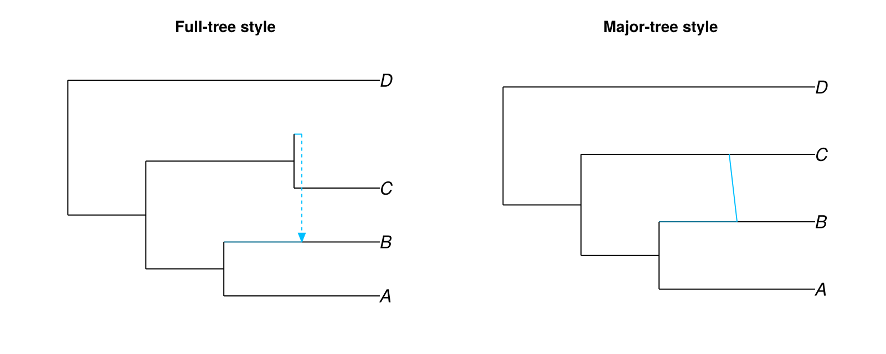
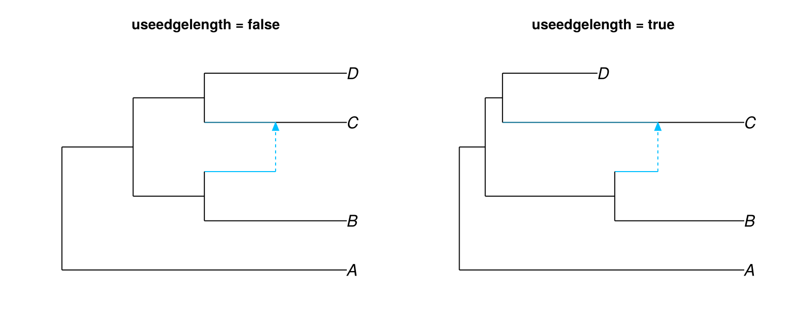
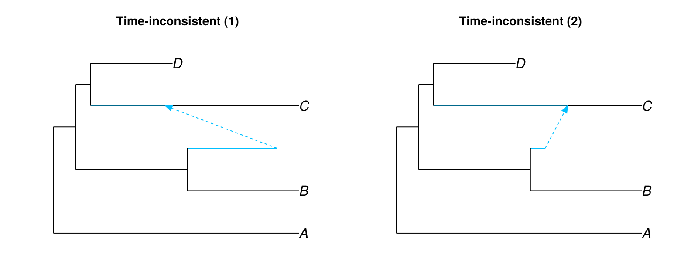
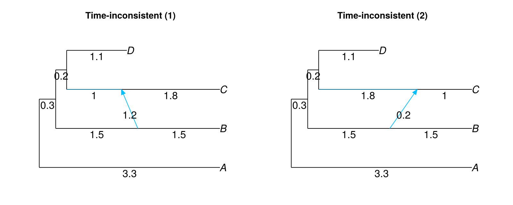
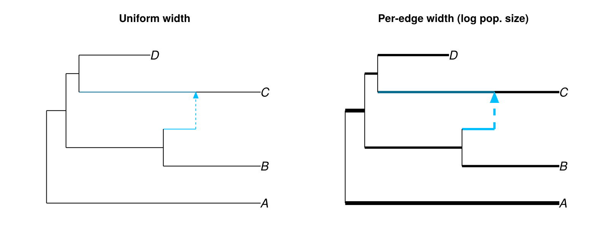
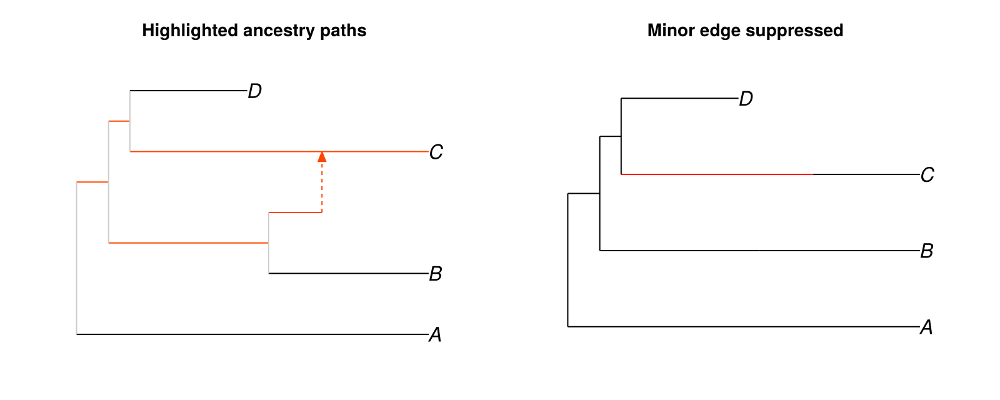

Edge controls
Hybrid edge styles
PhyloMakie supports two styles for rendering minor hybrid edges, selected with the style attribute.
The full-tree style (:fulltree, the default) draws minor hybrid edges as a horizontal segment at the hybrid node's y-position followed by a diagonal segment to the child node. This follows the icytree convention and makes the horizontal extent of each edge visible.
The major-tree style (:majortree) draws minor hybrid edges as a single diagonal line from the parent node directly to the child node. This reduces visual clutter when edge lengths are not meaningful.
net = PhyloNetworks.readnewick(
"(((A:.2,(B:.1)#H1:.1::0.9):.1,(C:.11,#H1:.01::0.1):.19):.1,D:.4);",
)
figure = Figure(size = (800, 320))
ax1 = Axis(figure[1, 1], title = "Full-tree style")
ax2 = Axis(figure[1, 2], title = "Major-tree style")
hidedecorations!(ax1); hidespines!(ax1)
hidedecorations!(ax2); hidespines!(ax2)
plot!(ax1, net; useedgelength = true, style = :fulltree)
plot!(ax2, net; useedgelength = true, style = :majortree)
figure
Edge lengths
By default PhyloMakie assigns equal horizontal spacing between each node regardless of branch lengths. Setting useedgelength = true scales node x-positions according to the network's edge lengths, so the horizontal axis represents evolutionary distance or time.
net_consistent = PhyloNetworks.readnewick(
"(A:3.3,((B:1.5,#H1:0.5):1.5,((C:1)#H1:1.8,D:1.1):.2):0.3);",
)
figure = Figure(size = (800, 320))
ax1 = Axis(figure[1, 1], title = "useedgelength = false")
ax2 = Axis(figure[1, 2], title = "useedgelength = true")
hidedecorations!(ax1); hidespines!(ax1)
hidedecorations!(ax2); hidespines!(ax2)
plot!(ax1, net_consistent; useedgelength = false, style = :fulltree)
plot!(ax2, net_consistent; useedgelength = true, style = :fulltree)
figure
A network is time-consistent when every path between two nodes has the same total length. Time-inconsistent networks can occur when branch lengths represent substitutions per site, coalescent units, or other non-calendar quantities, where different lineages may evolve at different rates. In a time-inconsistent network the horizontal position of a hybrid node differs depending on which parent path is followed, which may produce a visually confusing result.
net_inconsistent1 = PhyloNetworks.readnewick(
"(A:3.3,((B:1.5,#H1:1.2):1.5,((C:1.8)#H1:1,D:1.1):.2):0.3);",
)
net_inconsistent2 = PhyloNetworks.readnewick(
"(A:3.3,((B:1.5,#H1:0.2):1.5,((C:1)#H1:1.8,D:1.1):.2):0.3);",
)
figure = Figure(size = (800, 320))
ax1 = Axis(figure[1, 1], title = "Time-inconsistent (1)")
ax2 = Axis(figure[1, 2], title = "Time-inconsistent (2)")
hidedecorations!(ax1); hidespines!(ax1)
hidedecorations!(ax2); hidespines!(ax2)
plot!(ax1, net_inconsistent1; useedgelength = true, style = :fulltree)
plot!(ax2, net_inconsistent2; useedgelength = true, style = :fulltree)
figure
The major-tree style with showedgelength = true preserves the length information as text while removing the ambiguous horizontal placement of the minor edge shaft.
figure = Figure(size = (800, 320))
ax1 = Axis(figure[1, 1], title = "Time-inconsistent (1)")
ax2 = Axis(figure[1, 2], title = "Time-inconsistent (2)")
hidedecorations!(ax1); hidespines!(ax1)
hidedecorations!(ax2); hidespines!(ax2)
plot!(ax1, net_inconsistent1; useedgelength = true, style = :majortree,
showedgelength = true, arrowlen = 0.1)
plot!(ax2, net_inconsistent2; useedgelength = true, style = :majortree,
showedgelength = true, arrowlen = 0.1)
figure
Edge widths
The edgewidth attribute sets edge line widths. Pass a scalar to apply one width to all edges, or a Dict{Int, <:Number} keyed on edge numbers to set widths per edge. Use showedgenumber = true to identify edge numbers (see Annotations).
net_w = PhyloNetworks.readnewick(
"(A:3.3,((B:1.5,#H1:0.5):1.5,((C:1)#H1:1.8,D:1.1):.2):0.3);",
)
log_pop = Dict(e.number => log10(1_000) for e in net_w.edge)
log_pop[9] = log10(100_000)
log_pop[1] = log10(100_000)
figure = Figure(size = (800, 320))
ax1 = Axis(figure[1, 1], title = "Uniform width")
ax2 = Axis(figure[1, 2], title = "Per-edge width (log pop. size)")
hidedecorations!(ax1); hidespines!(ax1)
hidedecorations!(ax2); hidespines!(ax2)
plot!(ax1, net_w; useedgelength = true, style = :fulltree)
plot!(ax2, net_w; useedgelength = true, style = :fulltree, edgewidth = log_pop)
figure
Edge colors
Pass a scalar string to edgecolor to color all edges uniformly, or a Dict{Int, <:AbstractString} to color individual edges. When a dict is used, defaultedgecolor sets the color for edges not present in the dict.
Major and minor hybrid edges have dedicated color attributes: majorhybridedgecolor (default "deepskyblue4") and minorhybridedgecolor (default "deepskyblue"). These apply when edgecolor is a scalar; a per-edge dict overrides them for any listed edge number.
net_c = PhyloNetworks.readnewick(
"(A:3.3,((B:1.5,#H1:0.5):1.5,((C:1)#H1:1.8,D:1.1):.2):0.3);",
)
ecols = Dict(i => "black" for i in 1:length(net_c.edge))
for i in [9, 8, 6, 5, 4, 3]
ecols[i] = "orangered"
end
figure = Figure(size = (800, 320))
ax1 = Axis(figure[1, 1], title = "Highlighted ancestry paths")
ax2 = Axis(figure[1, 2], title = "Minor edge suppressed")
hidedecorations!(ax1); hidespines!(ax1)
hidedecorations!(ax2); hidespines!(ax2)
plot!(ax1, net_c; useedgelength = true, style = :fulltree,
edgecolor = ecols, defaultedgecolor = "grey80")
plot!(ax2, net_c; useedgelength = true, style = :majortree,
majorhybridedgecolor = "red", minorlinetype = "blank")
figure
Minor edge linestyle
The minorlinetype attribute controls the line style of the minor hybrid edge shaft. It accepts R-style line type names ("blank", "solid", "longdash", "dash", "dot", "dotdash", "longdash") and integer codes 0–6.
The default resolves automatically by style: "longdash" for full-tree style and "solid" for major-tree style. Set minorlinetype = "blank" to suppress the shaft entirely.
Arrow length
The arrowlen attribute sets the length of the arrowhead on minor hybrid edges. The default is 0.1 for full-tree style and 0 (no arrowhead) for major-tree style. Set arrowlen = 0.12 or similar to make arrows visible when using style = :majortree.